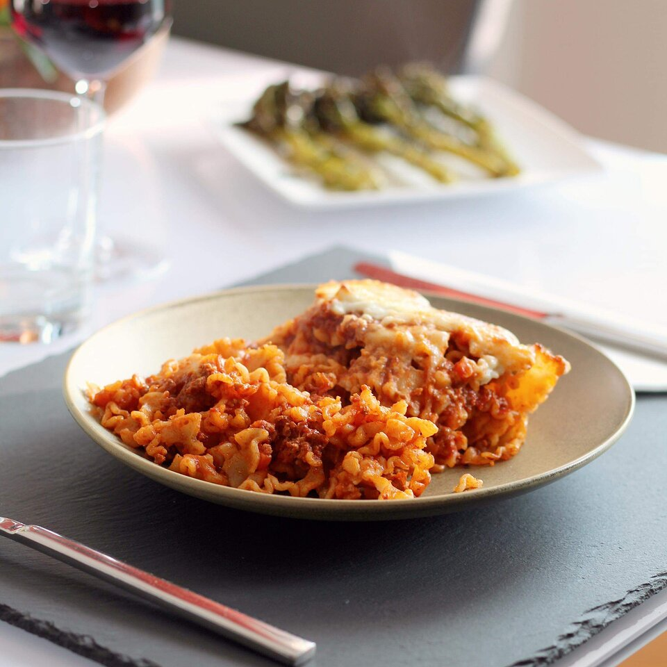

Lasagna

Description
This a lasagna recipe found online. It claims to make delicous lasagna without baking.
Ingredients
- .5 pounds of ground beef
- 14oz of spaghetti sauce
- 14.5oz can of diced tomatoes
- half onion
- 1 clove of garlix
- 2 tsp of basil
- 2 tsp of oregano
- salt and pepper
- 2 cups dried mafalda noodles
- 1 cup shredded mozzarella cheese
Steps
- Heat a large skillet over medium-high heat. Cook and stir beef in the hot skillet until browned and crumbly, 5 to 7 minutes. Drain and discard grease. Add spaghetti sauce, tomatoes, onion, garlic, basil, oregano, salt, and pepper. Cook over low heat until sauce is hot, about 15 minutes.
- Meanwhile, fill a large pot with lightly salted water and bring to a rolling boil. Cook mafalda noodles at a boil until tender yet firm to the bite, about 8 minutes. Drain.
- Add cooked and drained noodles to the sauce and stir until completely coated. Sprinkle mozzarella cheese on top.
- Set an oven rack about 6 inches from the heat source and preheat the oven's broiler.
- Place skillet under the hot broil and cook until cheese is golden and bubbly, 3 to 5 minutes.